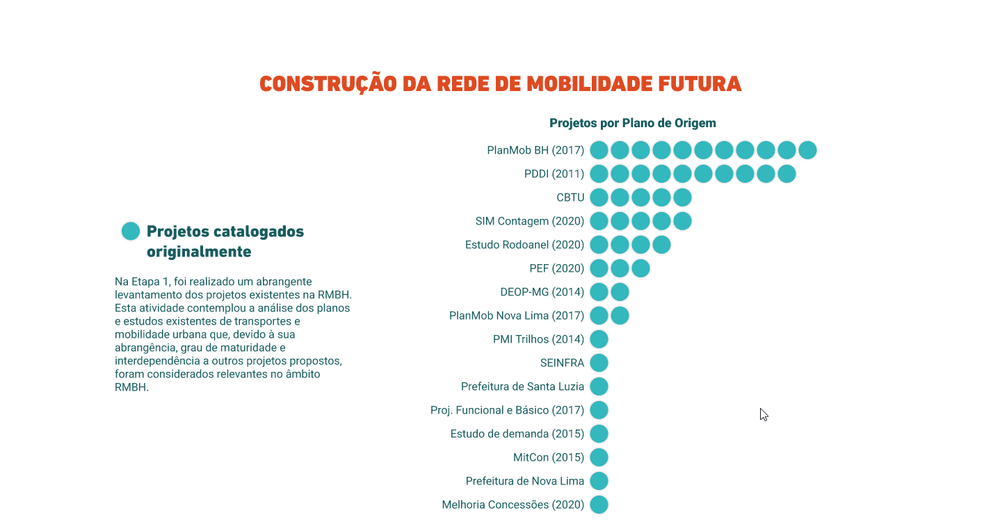

CCR Mapa - Interactive Infrastructure Management
Product Designer and BI Consultant
Created an interactive prototype for urban infrastructure management, enabling public bodies to visualize and manage municipal projects effectively.

Product Designer and BI Consultant
Created an interactive prototype for urban infrastructure management, enabling public bodies to visualize and manage municipal projects effectively.